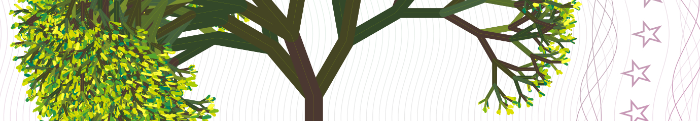

Tree Coin Whitepaper
Tree Coin è un modello di solidarietà alternativo legato a un simbolo elettronico, il logo, come esperimento accademico di solidarietà non-finanziario e non-monetario.
È un simbolo di solidarietà, basato sul CREDITO, sulla sostenibilità, sulla fiducia reciproca, sul rispetto degli altri e di Madre Natura, questo significa un credito di base alternativo e costante.
Il Tree Coin è:
Con i Tree Coin puoi generare da te la tua nota-etico-artistica e condividerla con le tue cerchie come strumento collaborativo alternativo.
Immagine da Wikipedia
I Tree Coin seguono le fasi lunari e si rigenerano con l’ammontare minimo di 1000 TREE ad ogni ciclo lunare (28 giorni), così come Madre Natura rigenera le piante.
Non puoi possedere meno di zero, ed è progettato specificatamente per realtà emergenti quali gli ecovillaggi e le aree rurali.
Il progetto Tree Coin consente a chiunque raggiunga l’obiettivo di proteggere la terra e gli alberi, nonché di creare ecovillaggi, basandosi sul concetto di sviluppo sostenibile e riduzione dei cambiamenti climatici e migliori condizioni di vita, nel raggiungimento degli Obiettivi di Sviluppo Sostenibile delle Nazioni Unite (SDGs), promulgata dall’Assemblea Generale delle Nazioni Unite il 25 settembre 2015.
Tree Coin in parole semplici
Il Tree Coin (TREE) è un CREDITO ECOLOGICO e del tutto etico e quindi, dal punto di vista legale e fiscale, non appartiene ad alcuna moneta FIAT standard e non direttamente ad altre criptovalute per i seguenti motivi:
Info
- Il Tree Coin (TREE) ha un valore indeterminato ed è concesso gratuitamente o a titolo gratuito
- È un’economia circolare basata sul CREDITO, pensato per essere diffuso attraverso Associazioni, comunità ed ecovillaggi
- Il suo valore NON corrisponde a nessuna moneta FIAT o ad altre criptomonete perché è esclusivamente basato sul consenso tra esseri umani, per favorire lo scambio di beni dell’economia reale
- È un facilitatore del baratto, un parametro numerico terzo e NON una Moneta: non puoi comprare o scambiare il CREDITO in sè stesso, ma lo puoi usare per fare donazioni o per fare comparazioni
- Il paradigma della concessione del credito significa dare prima di chiedere un servizio, non pagare dopo che sia stato fatto. Quindi, se dai a qualcuno il diritto di fare qualcosa per te, stai concedendo fiducia ed energia per un certo periodo di tempo. Dai credito per qualcosa dopo di ché puoi confermarlo, rinnovarlo o revocarlo… BASTA TRUFFE!
- I crediti sono collegati alle fasi lunari e solari, come ogni bene di Madre Terra
- È una vera economia circolare e non puoi mai avere meno di zero: rappresenta “quanto possiamo fare”, quindi l’ammontare totale è progettato algoritmicamente per rinnovarsi periodicamente. Questo significa che puoi spendere tutto quello che hai e vedere il tuo credito rinnovarsi periodicamente, perché siamo esseri umani e perciò, finché non se ne hanno più le capacità, non possiamo perdere la volontà di fare!
- Puoi stampare i tuoi crediti cartacei da te!
Davvero, puoi ad esempio generare e stampare le tue credito-note da 17,88 TREE e/o importi differenti… Quello che conta davvero è l’hash (token) generato, legato alla catena e infine stampato da te. Una volta generato un credito cartaceo, viene creato un trust generico, ed è libero di circolare mano per mano fino a quando qualcuno non lo reclama sul proprio account digitale, dopodiché il seriale viene contrassegnato comeALREADY USEDorEXPIRED(già usato o scaduto). - Ogni credito-nota ha il proprio albero generato raffigurato, perciò quello che viene generato ha il suo valore univoco intrinseco, che è un credito potenziale infinito…
NOTA: Se hai una stampante laser, puoi divertirti a creare la tua credito-nota in legno sostenibile oppure su “una vera credito-foglia-nota”, puoi dipingere un quadro con valore di credito arricchito (il token) o lavorare a maglia un vestito con un token valido… Come per i prodotti della natura, non c’è limite a ciò che puoi fare…
Forniamo tutto il software necessario per farlo. - Sistema Open Source: sia la grafica che i codici sono rilasciati come Creazioni e Software Open Source sotto la licenza GNU Affero General Public License v3.0
Partecipazione agli Obiettivi globali delle Nazioni Unite
Il progetto Tree Coin lavora per il raggiungimento degli Obiettivi di sviluppo sostenibile (SDG) delle Nazioni Unite su tre principali obiettivi globali:
- Riforestazione e vita sulla Terra (SDG 15)
- Riduzione di CO₂ e dei Cambiamenti Climatici (SDG 13)
- Recupero Post Pandemico e Benessere Generale (SDG 3)
Partecipazione agli Obiettivi globali delle Nazioni Unite